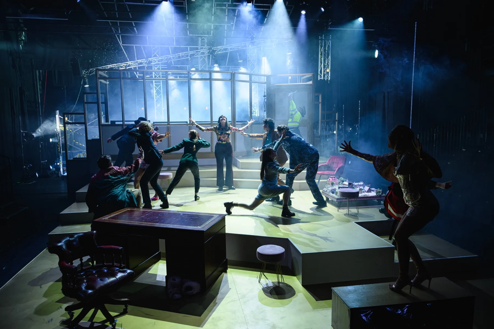

Technical Manager
The Government Inspector
Photos by David Monteith-Hodge (@photographise)
My role
Technical Manager
I designed the rigging and automation which was revealed behind the set. During this project I utilised Braceworks to help with my rigging and bridle calculations.
Production Planning
-
The original concept from the LD asked for some trusses in the auditorium.
These were originally going to be live-flown, but due to the Kinesys winches and drives we had (elevation drives, which were not rated to the use case we needed, as per BS17206) and the fly height in the auditorium, we changed these to be static.
Due to the weight capacity of these, I ended up hanging these on a bridle to in-house rigging points, which were concrete-casted strut channels.
-
The LD also wanted a Parcan truss that tilted and trimmed up and down. Due to the hoists we had left, we only had two big tow winches, which had the capacity to fly the truss, but on two points the deflection on the truss would be out of bounds.
We ended up bridling the truss, but this did not mean we could tilt it: so we manufactured pulleys to be at the apex of the bridle so that the bridle legs could adjust to the tilt.
These were made up of a mixture of Hall Stage pulleys and 12mm sheet steel plates. Below is a Braceworks render of the bridles, but more calculations were done for the different tilt positions and the E-stop forces on the truss and grid.
There is also a video of the truss running.